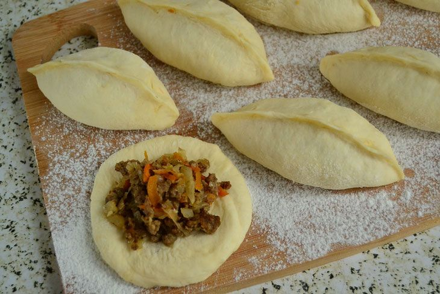

Pirozhki with meat and cabbage

Description
Pirozhki are soft, golden-brown buns of yeast dough enveloping a savory, hearty filling. This version combines tender, sautéed cabbage with flavorful minced meat, creating a satisfying balance of textures and tastes—the slight sweetness of the cabbage complements the rich meat perfectly. They are the ultimate comfort food: portable, filling, and delicious served hot with a dollop of sour cream or simply on their own.
Ingredients
For the Dough:
- 500 g (about 4 cups) all-purpose flour, plus extra for dusting
- 250 ml (1 cup) warm milk
- 7 g (1 packet) active dry yeast
- 50 g (¼ cup) granulated sugar
- 1 large egg
- 50 g (¼ cup) unsalted butter, melted and cooled
- 1 tsp salt
For the Filling:
- 300 g (10.5 oz) ground beef or pork (or a mix)
- 300 g (about ½ medium head) white cabbage, finely shredded
- 1 medium onion, finely chopped
- 1 tbsp tomato paste
- 2 tbsp vegetable oil, for frying
- Salt and black pepper, to taste
- Optional: a pinch of sugar, chopped fresh dill
- 1 egg yolk, beaten with 1 tbsp milk (for egg wash)
- Vegetable oil, for greasing
Recipe
- Make the Dough: In a large bowl, dissolve the sugar in the warm milk. Sprinkle the yeast over the top and let it sit for 10-15 minutes until frothy. Whisk in the egg, melted butter, and salt. Gradually add the flour, mixing until a shaggy dough forms.
- Knead & Rise: Turn the dough onto a floured surface and knead for 7-10 minutes until smooth and elastic. Place in a lightly oiled bowl, cover with a clean kitchen towel, and let rise in a warm place for 1-1.5 hours, or until doubled in size.
- Prepare the Filling: While the dough rises, heat oil in a large skillet over medium heat. Sauté the onion until translucent. Add the ground meat, breaking it up with a spoon, and cook until no longer pink. Add the shredded cabbage and cook, stirring occasionally, until the cabbage has wilted and softened (about 10-15 minutes). Stir in the tomato paste, and season generously with salt, pepper, and a pinch of sugar if desired. Cook for another 2-3 minutes. Remove from heat, let cool completely. Stir in dill if using.
- Shape the Pirozhki: Punch down the risen dough and divide it into 12-15 equal pieces. Roll each piece into a ball, then flatten into a 3-4 inch (8-10 cm) round oval on a floured surface. Place 1-1.5 tablespoons of the cooled filling in the center. Fold the dough over to create a half-moon shape and pinch the edges tightly to seal. Place seam-side down on a parchment-lined baking sheet. Repeat with remaining dough and filling.
- Second Rise & Bake: Cover the shaped pirozhki with a towel and let them rise for 20-30 minutes. Preheat your oven to 180°C (350°F). Gently brush the tops of each pirozhok with the egg wash. Bake for 20-25 minutes, or until deeply golden brown.
- Serve: Let the pirozhki cool on a wire rack for a few minutes before serving. They are best enjoyed warm.
Chef's Tip: For a classic alternative, you can pan-fry the pirozhki. After shaping, let them rise briefly, then fry in a generous layer of vegetable oil over medium heat for 3-4 minutes per side until golden and cooked through.
Home